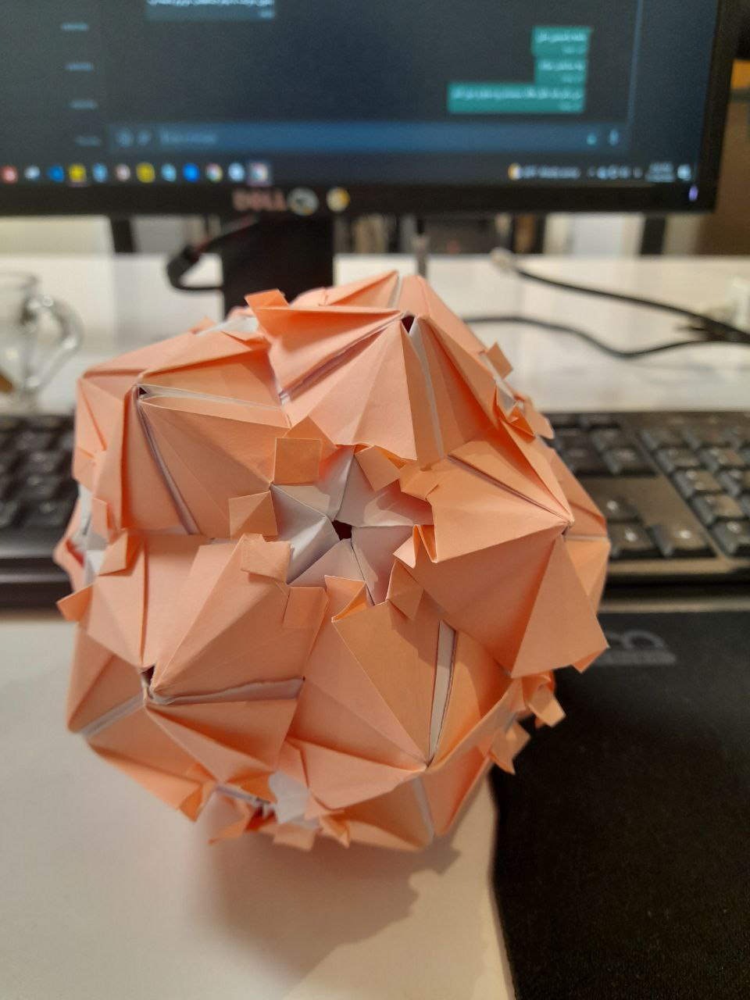

About — quick story
I combine principled signal processing with modern deep learning to tackle real-world problems. Over the past five years I have led and shipped research that improves model robustness and practical deployability:
- Impact-first focus: I improved model robustness by ~15% on infant-cry classification through feature fusion and continual learning.
- End-to-end AI for infrastructure: I lead end-to-end AI solution research in construction/infrastructure teams to translate models into production-ready pipelines and monitoring tools.
- Startup experience: I have worked with health, telecom, and finance startups as a data scientist and data analyst, helping product teams turn data into actionable systems.
- Mission-driven: I am passionate about making AI beneficial for everyone, with a special focus on healthcare applications.
- Mentorship & collaboration: I mentor Mitacs interns and collaborate across university, industry, and government partners to turn prototypes into reproducible tools.
Selected projects
Infant Cry Cause Classification
End-to-end AI solution (construction team)
Robust Few-Shot & Active Learning
DOA & Beamforming for Audio Enhancement
How I work
I prioritize reproducibility, compact models that meet deployment constraints, and human-in-the-loop processes for labeling and continual updates. In practice that means unit-tested pipelines, small model checkpoints, and monitoring model drift post-deployment.
Interests & Hobbies
Outside of research I love walking, biking, and spending time in nature. I enjoy making origami, listening to music, and curating home décor — small ways I recharge and stay curious.